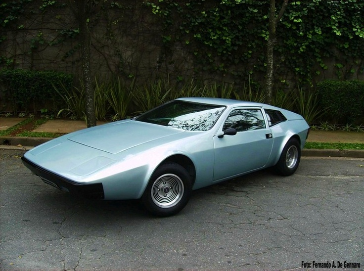

OLDSCHOOL
Ficha Técnica
Ano
1977 - 1984
Motor
1.6 | 4 cilindros
Potência
65 cv
Câmbio
Manual | 4 marchas
Tração
Dianteira
Carroceria
Coupé
Combustível
Gasolina
FIPE
R$ 40.000 ~ R$ 100.000
Um brasileiro com cara de importado
O Miura Sport foi um dos carros mais ousados produzidos pela indústria brasileira. Com desenho baixo, frente marcante e interior cheio de equipamentos para a época, chamava atenção por onde passava. Seu estilo exótico transformou o Miura em um verdadeiro símbolo dos esportivos nacionais dos anos 70 e 80.